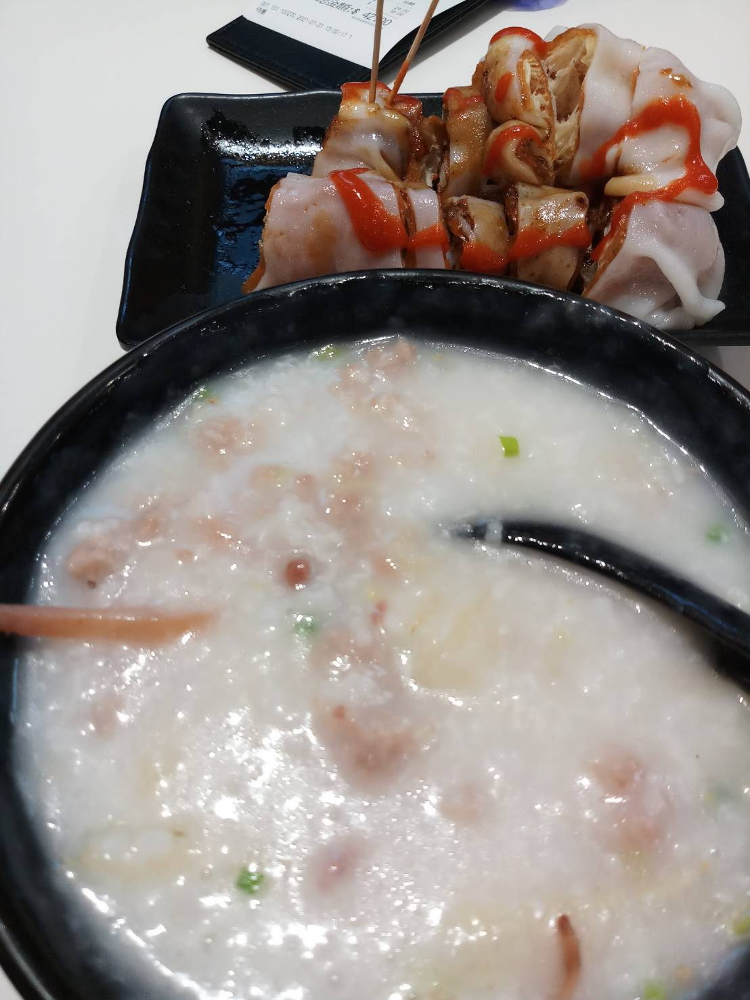

My favourite food
This website template has been designed by Free Website Templates for you, for free. You can replace all this text with your own text. You can remove any link to our website from this website template, you're free to use this website template without linking back to us. If you're having problems editing this website template, then don't hesitate to ask for help on the Forums.
-

These are traditional food from Hong Kong, my hometown.
-

And this too.
Dish
-
• Udon and fried chiken
Udon is originally from Japan, but Hong Kong people often eat it with meat and vegetables in restaurants.
-
• Dim sum
There are variety of dim sum to choose from when I go to chinese restaurants.
-
•Rice porridge and cheung fun
Rice porridge is my mom's favourite dish, while I love cheung fun more! It is a type of rice noodle dish.
While I love eating Japanese food, I miss those dishes from my hometown.